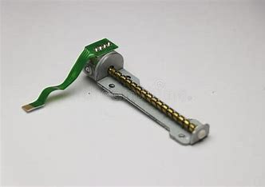
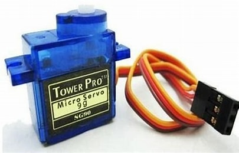
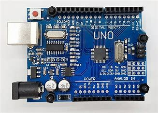
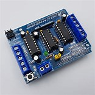

A drawing machine is not much more than a CNC machine. More specifically a CNC router with an attached writing utensil, rather than a cutting tool. This particular application is an open-source project by BCN3D Technologies, which anyone can replicate for themselves. The parts can be 3D printed using FDM printers. Robot arms are an essential thing to learn for any engineering students looking get into the manufacturing industry. Today robots are employed in virtually all manufacturing and assembly processes. They do the job which are hazardous, strenuous, or too difficult for humans
Stepper Motor : A DC electric motor that divides a full rotation into a number of equal steps.
Servo Motor : A servomotor (or servo motor) is a rotary or linear actuator that allows precise control of angular or linear position, velocity, and acceleration.
Arduino UNO : It is a single chip microcontroller of the Atmel family. The processor code inside it is of 8-bit.
Motor Driver Shield L293D : Drive the two DC motors with the arduino board, controlling the speed and direction of each one independently
As you required take the wires and connect with correct circuit diagram to get correct output
ARDUINO IDE : The open-source Arduino Software (IDE) makes it easy to write code and upload it to the board (https://www.arduino.cc). It is simplified C/C++ functions language- based programming can be download functionality with a rich set of library functions.
Inkscape : is a free and open source vector graphics editor it can be used to create or edit vector graphics such as illustrations, diagram line, arts, charts, logos and complex paintings